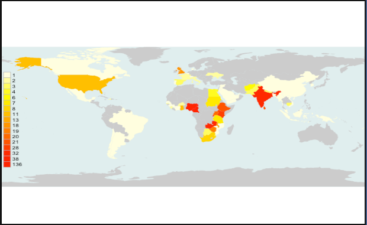

Students enrolled on the master’s course site, 2008-2020 #
We report on the 562 students who passed at least one module, up to and including those enrolled in first semester 2020, whose results were available by the time that Peoples-uni closed. A further 1174 students enrolled, but did not take, or pass, a module assignment.
Of these 562 students, 220 (41%) were female, and the average age was 38years. 193 (36%) had a medical degree, 172 (32%) a non-medical degree in health and 116 (21%) a non-health related degree. 11 students had a previous PhD and 126 (23%) reported a previous master’s degree.
211 students (39%) reported that they were working in public health, 138 (26%)were clinicians, while 48 (9%) were primarily academics.
Students came from 66 countries (75% from Africa with the largest number from Nigeria) and their distribution is shown in the Figure

159 passed with a master’s award – 94 with the MPH from Manchester Metropolitan University, 37 with the MPH from Euclid University and 28 with the Peoples-uni master’s award.
A further 45 students gained a Diploma (passing the requisite number of coursework modules, but not progressing to the Dissertation) and 96 students gained a Certificate (passing half the number of modules required for the Diploma).
You can see feedback from some of the graduates here